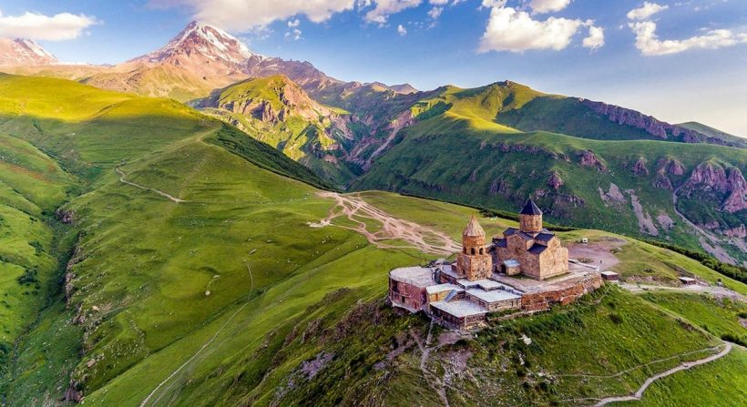

Bem-vindo ao EuropaEmFoco Explore a beleza e a riqueza cultural da Europa conosco. De majestosas paisagens naturais a cidades históricas repletas de encanto, nosso site é seu guia virtual para descobrir destinos imperdíveis no continente europeu.
Viaje conosco pelos recantos pitorescos, conheça a história que se desenrola nas ruas de cidades antigas e maravilhe-se com as maravilhas arquitetônicas que definem esta região única. Navegue por nossas páginas e descubra dicas de viagem, curiosidades culturais e recomendações exclusivas para tornar sua jornada ainda mais especial.Preparamos este espaço com carinho, inspirados pela paixão por viagens e pelo desejo de compartilhar as maravilhas que a Europa oferece. Então, prepare-se para uma jornada virtual inesquecível! Comece a explorar agora e deixe-se levar pelos encantos da Europa. Bon voyage!